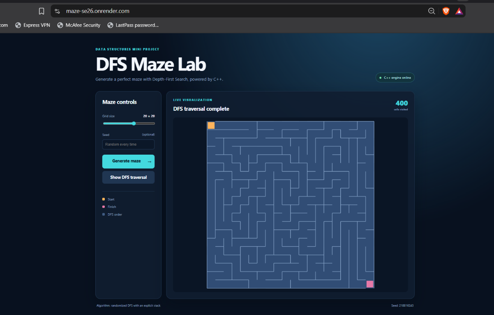

A full-stack demonstration in which the core maze algorithm is implemented in C++ and exposed through a Node.js API for an interactive browser interface.
DFS Maze Lab generates a perfect maze in C++ and presents the result as an interactive web visualization.
The project demonstrates how a classical data-structures algorithm can be integrated into a modern web application. The C++ program is responsible for the algorithmic work: it creates the maze, manages the visited state, uses an explicit stack to perform Depth-First Search, removes walls between connected cells, and returns the result as JSON. The Node.js server acts as a bridge between the browser and the compiled C++ program.
This project demonstrates DFS-based maze generation and traversal visualization. The “Show DFS traversal” action replays the complete visit order produced by the C++ generator, so every cell is visited exactly once. It is not a shortest-path solver; shortest-path search would be an additional feature.
/api/maze/generate.visitOrder.| Layer | Implementation | Responsibility |
|---|---|---|
| Algorithm | maze_dfs.cpp | Randomized DFS, stack, visited cells, wall removal, JSON output. |
| Server | src/index.js | Static hosting, validation, C++ process execution, API response handling. |
| Presentation | public/index.html, styles.css, app.js | User controls, responsive layout, Canvas rendering, traversal animation. |
| Deployment | render.yaml | Build and start commands for Render, including C++ compilation. |
The main web algorithm is implemented in maze_dfs.cpp. It uses standard C++17 libraries only: iostream for output, random for repeatable random choices, and vector for dynamic arrays.
struct Cell {
bool walls[4] = {true, true, true, true};
};
struct Position {
int row;
int col;
};
Each Cell stores four wall flags in this order: up, right, down, and left. A value of true means the wall exists. A Position stores a row and column coordinate. This makes the algorithm easy to map onto a two-dimensional grid while storing the grid internally as a one-dimensional vector.
const int rows = argc > 1 ? std::stoi(argv[1]) : 20;
const int cols = argc > 2 ? std::stoi(argv[2]) : 20;
const unsigned int seed = argc > 3
? static_cast<unsigned int>(std::stoul(argv[3]))
: std::random_device{}();
The program accepts optional rows, columns, and seed values. Defaults are 20 × 20 with a random seed. A size range of 5–35 prevents unreasonable requests and keeps browser rendering practical. A supplied seed makes a maze reproducible, which is useful for demonstrations and debugging.
auto index = [cols](int row, int col) {
return row * cols + col;
};
The lambda converts a two-dimensional coordinate into a vector index. For example, in a grid with 20 columns, cell (3, 4) is stored at index 64. This avoids a fixed-size matrix and allows the selected dimensions to be passed at runtime.
const int rowMove[4] = {-1, 0, 1, 0};
const int colMove[4] = {0, 1, 0, -1};
const int opposite[4] = {2, 3, 0, 1};
The direction arrays describe movement in the four compass directions. Direction 0 moves up, 1 moves right, 2 moves down, and 3 moves left. The opposite array ensures that when a wall is removed from one cell, the corresponding wall is also removed from its neighbor.
std::vector<Cell> maze(rows * cols); std::vector<bool> visited(rows * cols, false); std::vector<Position> stack; std::vector<Position> visitOrder;
All cells initially have four walls and are unvisited. The stack represents the DFS frontier. The separate visitOrder vector records the order in which cells are first reached; the browser later uses this list for animation.
stack.push_back({0, 0});
visited[0] = true;
visitOrder.push_back({0, 0});
DFS starts at the top-left cell. That cell is immediately marked visited and pushed onto the stack. Marking before pushing prevents the same cell from being added again.
while (!stack.empty()) {
Position current = stack.back();
std::vector<int> available;
for (int direction = 0; direction < 4; direction++) {
int nextRow = current.row + rowMove[direction];
int nextCol = current.col + colMove[direction];
if (inside(nextRow, nextCol) &&
!visited[index(nextRow, nextCol)]) {
available.push_back(direction);
}
}
The top stack item is the current cell. The program checks all four possible neighbors, ignores positions outside the grid, and keeps only unvisited neighbors. If at least one exists, std::mt19937 and std::uniform_int_distribution select one uniformly. Random selection makes each generated maze different while still being repeatable for a fixed seed.
maze[index(current.row, current.col)].walls[direction] = false;
maze[index(nextRow, nextCol)].walls[opposite[direction]] = false;
visited[index(nextRow, nextCol)] = true;
stack.push_back({nextRow, nextCol});
visitOrder.push_back({nextRow, nextCol});
A passage is created by removing the wall on both sides of the connection. The new cell is marked visited, pushed onto the stack, and added to the visit order. This is the core DFS expansion step.
if (available.empty()) {
stack.pop_back();
continue;
}
When the current cell has no unvisited neighbors, DFS backtracks by removing it from the stack. The next loop iteration examines the previous cell. This explicit stack is the iterative equivalent of recursive DFS and avoids recursion-depth limitations.
maze[0].walls[0] = false; maze[index(rows - 1, cols - 1)].walls[2] = false;
After all cells have been reached, the top wall of the starting cell is opened as the entrance. The bottom wall of the bottom-right cell is opened as the exit. The internal maze passages remain generated by DFS.
{
"rows": 20,
"cols": 20,
"seed": 123,
"visitedCells": 400,
"cells": [[{"walls":[0,0,1,1]}, ...]],
"visitOrder": [[0,0], [0,1], ...]
}
| Property | Meaning |
|---|---|
rows, cols | Dimensions used to generate the grid. |
seed | Random seed used by the C++ generator. |
visitedCells | Number of cells reached, equal to rows × cols for a complete generation. |
cells | Two-dimensional maze representation; each cell contains four wall flags. |
visitOrder | Coordinates in first-visit order, used by the traversal animation. |
| Resource | Analysis |
|---|---|
| Time complexity | O(R × C). Each cell is visited once and each cell examines at most four directions. |
| Space complexity | O(R × C). The maze, visited array, stack, and visit-order list are all bounded by the number of cells. |
| Graph interpretation | Each grid cell is a graph vertex; possible movements are edges between orthogonal neighbors. |
| Traversal strategy | Depth-First Search using LIFO behavior through stack.back() and stack.pop_back(). |
Recursive DFS is concise, but every recursive call consumes call-stack memory. The project uses a vector as an explicit stack, making the DFS behavior visible and directly connected to the data-structures learning objective. The algorithm still has the same DFS order and complexity.
At each current cell, the available unvisited neighbors are collected and one is selected randomly. This changes the shape of the DFS spanning tree and therefore the maze layout. The Mersenne Twister generator is seeded from the command line or from std::random_device.
The web layer does not reimplement the maze algorithm. It requests the result from the C++ engine and visualizes the data returned by the server.
visitOrder and highlights cells progressively.The browser creates one Canvas cell for each C++ maze cell. A wall flag of 1 causes a line to be drawn on that side. The start cell is orange, the finish cell is pink, and traversed cells use a darker blue highlight. The visual representation therefore maps directly to the C++ data structure.

Figure 1. Deployed DFS Maze Lab showing a generated 20 × 20 maze after complete traversal.
GET /api/maze/generate?rows=20&cols=20&seed=123
| Stage | Implementation detail |
|---|---|
| Validation | Rows and columns must be integers from 5 to 35. The seed must be a non-negative integer. |
| Compilation | If the executable is missing, the server runs g++ -std=c++17 -O2 maze_dfs.cpp -o maze_dfs.exe. |
| Execution | execFile starts the C++ program with validated arguments. |
| Parsing | Standard output is parsed as JSON before being returned to the browser. |
| Errors | Invalid input returns 400, unavailable compiler returns 503, and engine or JSON failures return 500 with an explicit error. |
Express serves the public directory and also provides the health endpoint /api/health. The MAZE_ONLY=true environment variable skips the unrelated PostgreSQL authentication initialization, allowing the mini project to run independently.
| Technology | Role in the project |
|---|---|
| C++17 | Core DFS algorithm, maze model, random generation, traversal order, JSON serialization. |
| GNU g++ | Compiles the C++ source into the executable used by the server. |
| Node.js | Server-side JavaScript runtime. |
| Express.js | HTTP server, static frontend hosting, and maze API endpoint. |
| HTML5 | Page structure and interface elements. |
| CSS3 | Responsive dark-themed layout, cards, controls, typography, and visual hierarchy. |
| JavaScript | Fetch API calls, input handling, Canvas rendering, and traversal animation. |
| HTML Canvas | Draws maze walls and cell highlights dynamically. |
| Render | Public deployment platform; build configuration is defined in render.yaml. |
| GitHub | Source-code hosting and deployment source repository. |
dfs-maze-project/ ├── maze_dfs.cpp # Main standard C++ DFS web engine ├── dfs.cpp # Original SFML desktop implementation ├── src/index.js # Express server and C++ bridge ├── public/ │ ├── index.html # User interface │ ├── styles.css # Presentation │ └── app.js # Browser behavior and Canvas drawing ├── render.yaml # Render deployment configuration ├── package.json # Node dependencies and scripts └── README.md # Setup and deployment instructions
cd D:\c++\dfs-maze-project npm install $env:MAZE_ONLY="true" npm start
After the server starts, the interface is available at http://localhost:3000 or the selected port. The API can be tested directly with a URL such as /api/maze/generate?rows=10&cols=10&seed=2026.
The repository contains a Render Blueprint with the following build and start behavior:
buildCommand: npm install && g++ -std=c++17 -O2 maze_dfs.cpp -o maze_dfs.exe startCommand: npm start healthCheckPath: /api/health MAZE_ONLY: true
Render installs dependencies, compiles the standard C++ engine, starts Express, and exposes the website through an HTTPS URL. The deployed demonstration shown in Figure 1 is available at https://maze-se26.onrender.com.
DFS Maze Lab connects data-structures theory with a practical software system. The central algorithm is a randomized iterative Depth-First Search that builds a spanning tree over a rectangular grid. The explicit stack, visited array, direction vectors, reciprocal wall updates, and backtracking behavior make the algorithm’s operation clear and demonstrable.
The surrounding web architecture preserves the C++ implementation as the source of truth for maze generation. Express provides a small, controlled bridge, while the browser provides a responsive interface and visual explanation of the traversal order. The final result is a reproducible, deployable mini project that demonstrates algorithm design, systems integration, user interface development, and cloud deployment.
Project source repository: github.com/prashantiron2-lab/maze_SE26